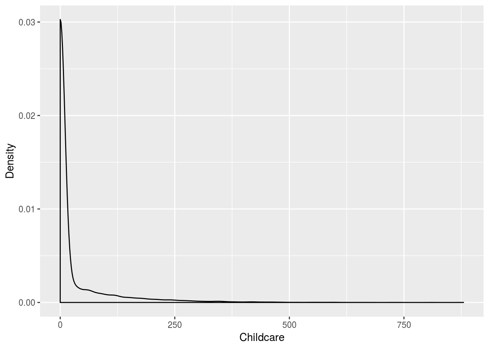

Intro & Background
The American Time Use Survey (ATUS) is a time-use survey of Americans, which is sponsored by the Bureau of Labor Statistics (BLS) and conducted by the U.S. Census Bureau. Respondents of the survey are asked to keep a diary for one day carefully recording the amount of time they spend on various activities including working, leisure, childcare, and household activities. The survey has been conducted every year since 2003.
The data for each year can be found at https://www.bls.gov/tus/#data.
Once there, there is an option of downloading a multi-year file, which includes data for all of the years the survey has been conducted, but for the purposes of this project, let’s just look at the data for 2016. Under Data Files, click on American Time Use Survey--2016 Microdata files.
You will be brought to a new screen. Scroll down to the section 2016 Basic ATUS Data Files. Under this section, you’ll want to click to download the following two files: ATUS 2016 Activity summary file (zip) and ATUS-CPS 2016 file (zip).
Data
Exploratory Data Analysis
I filtered the dataset to only include people with a number of children less than or equal to only one. Created a variable (atus.sub), in the dataframe for the survey. Then created a density plot showing how much time is spent on the childcare variable in the dataset.
## add your exploratory analysis code here
atus.sub <- filter(atus.all, TRCHILDNUM >=1)
atus.all <- atus.all %>%
mutate(CHILDCARE =rowSums(atus.all[,grep("t0301", colnames(atus.all))]) )
ggplot(atus.all, aes(CHILDCARE)) +
geom_density() +
xlab("Childcare") +
ylab("Density")